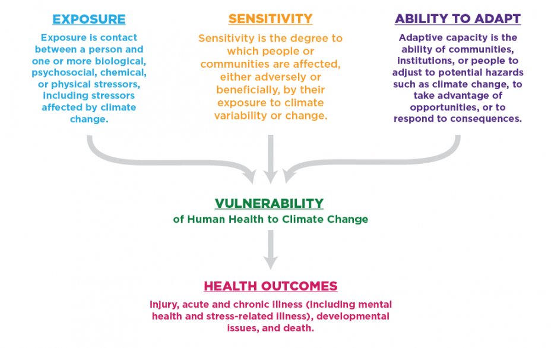
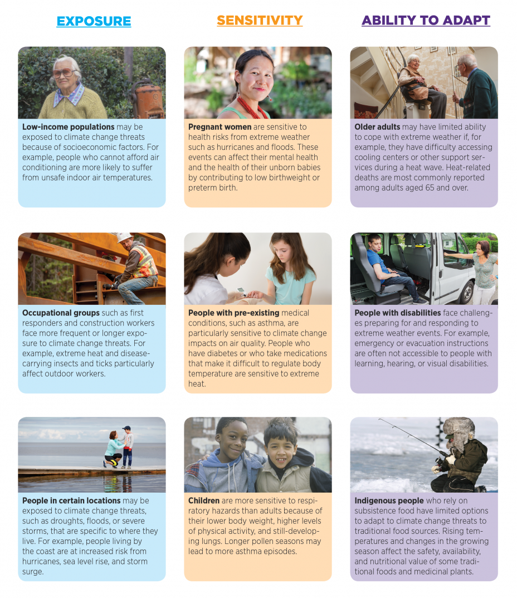

Understanding the Connections Between Climate Change and Human Health
Climate change poses many threats to the health and well-being of Americans, from increasing the risk of extreme heat events and heavy storms to increasing the risk of asthma attacks and changing the spread of certain diseases carried by ticks and mosquitoes. Some of these health impacts are already happening in the United States.
Scientists' understanding of the multiple ways that climate change increases risks to human health has advanced significantly in recent years. This section highlights key concepts from one of the latest climate and health assessments (see the box) to help illustrate how climate change can affect human health in the United States. In addition, this section demonstrates how EPA’s climate change indicators advance the dialogue in connecting climate change and human health.
How Does Climate Change Affect Human Health?
Climate change can exacerbate existing health threats or create new public health challenges through a variety of pathways. Figure 1 summarizes these connections by linking climate impacts to changes in exposure, which can then lead to negative effects on health (health outcomes). This figure also shows how other factors—such as where people live and their age, health, income, or ability to access health care resources—can positively or negatively influence people’s vulnerability to human health effects. For example, a family’s income, the quality of their housing, or their community’s emergency management plan can all affect that family’s exposure to extreme heat, the degree to which their health is affected by this threat, and their ability to adapt to impacts of extreme heat (for more examples, see Figure 4).
Figure 1. Climate Change and Health Pathway
Figure 1 shows how climate change can affect people by changing their exposure to health threats (moving from top to bottom) and by influencing the environmental, institutional, social, and behavioral factors that affect a person’s or community’s health (moving through the boxes on the sides).
What can Indicators Tell Us About Climate Change and Human Health?
As shown in Figure 1, the impacts of climate change on health are complex, often indirect, and dependent on multiple societal and environmental factors. Tracking changes in climate impacts and exposures improves understanding of changes in health risk, however, even if the actual health outcome is difficult to quantify. For example, the flooding pathway in Figure 2 shows how indicators of certain climate impacts like Sea Level, Heavy Precipitation, and Coastal Flooding could be used by state and local health officials to better understand changes in human exposure to contaminated waters (a health risk). By recognizing changing risks, these officials can better understand how climate change affects the number of people who get sick with gastrointestinal illnesses (a health outcome). Thus, even where health data or long-term records are unavailable or where the links between climate and health outcomes are complex, indicators play an important role in understanding climate-related health impacts.
Figure 2. Connecting Climate Change Indicators to Health Pathways
The three examples above show how climate impacts can affect health. The numbered circles identify where climate change indicators provide key information on changes occurring at different points along the pathways. Other factors can play a role in determining a person’s vulnerability to climate-related health outcomes; see Figure 1 and Figure 4.
Who’s at Risk?
Every American faces a risk of health impacts associated with climate change. Some people, however, face higher risks than others because of differences in the hazards to which they are exposed, their sensitivity to these hazards, and their ability to adapt (see Figure 3). Thus, it is important to be able to identify “populations of concern,” which include groups representing people of all ages, living in different places, who interact with their environment in different ways. Figure 4 shows some examples of how certain populations are more vulnerable to health impacts because of differences in their exposure, sensitivity, or ability to adapt to climate-related stresses.
It is important to remember that the different health impacts identified here do not occur in isolation; people can face multiple threats at the same time, at different stages in their lives, or accumulating over the course of their lives. Risks may increase as people are exposed to multiple health threats. For example, extremely hot days can lead to heat-related illness as well as poor air quality, by increasing the chemical reactions that produce smog. In addition, many of the factors that influence whether a person is exposed to health threats or whether they become ill, such as an individual’s personal habits, living conditions, and access to medical care (see Figure 1), can also change over time.
Figure 3. Determinants of Vulnerability

Figure 4. Examples of Climate Change Vulnerability

Additional Resources
Understanding the threats that climate change poses to human health can help people and communities work together to lower risks and be prepared. Climate change threatens human health, including mental health, as well as access to clean air, safe drinking water, nutritious food, and shelter.
The following EPA resources on how climate change affects your health can be found on the Climate Change Impacts site:
- Eight fact sheets on populations shown in Figure 4 that are particularly vulnerable to the health impacts of climate change.
- A clickable map with examples of state impacts and resources to help individuals and communities prepare and respond to climate threats.
- An online 10-question quiz to challenge you and your friends on climate and health knowledge.
- A fact sheet highlighting health impacts of climate change at different stages of life (PDF, 1 pp, 1 MB), from infancy through adolescence to adulthood.